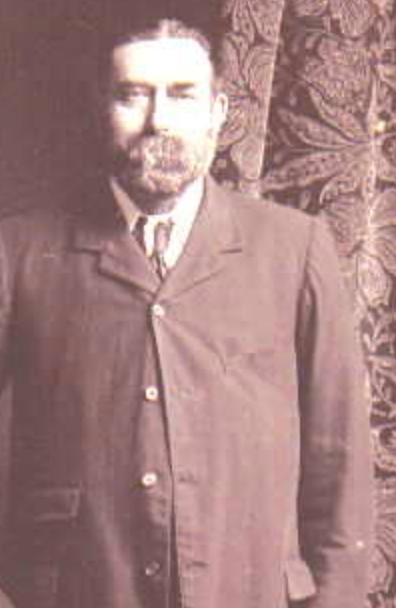
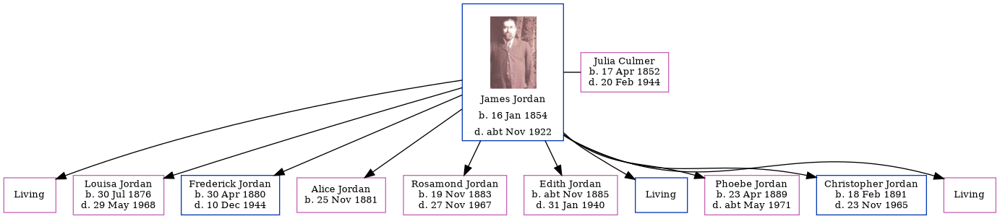

James Jordan 1854 - c1922
[ Home ] | [ Calendar ] | [ Surnames Index ] | [ Errors ] | [ Family History ]James Jordan, the husband of Julia Culmer (the first cousin three-times-removed on the mother's side of Nigel Horne), was born in Faversham, Kent, England on 16 Jan 18541,2,3 and married Julia (with whom he had 10 children: Sarah Elizabeth, Louisa, Frederick John Thomas, Alice Ann Harriet, Rosamond Julia, Edith Emma Nellie, James George Charles, Phoebe May, Christopher Gerald and Kathleen Mary, along with 3 surviving children) at St Mary Of Charity Church, Church Road in Faversham on 1 Apr 18764.
During his life, he was living at 2 Mill Place in Faversham on 3 Apr 18811, on 5 Apr 18915, on 31 Mar 19016 and on 2 Apr 19117.
He died c. Nov 1922 in Faversham2.
Children
- Louisa was born on 30 Jul 1876
- Frederick John Thomas was born on 30 Apr 1880
- Alice Ann Harriet was born on 25 Nov 1881
- Rosamond Julia was born on 19 Nov 1883
- Edith Emma Nellie was born c. Nov 1885
- Phoebe May was born on 23 Apr 1889
- Christopher Gerald was born on 18 Feb 1891
Citations
- 1881 England, Wales & Scotland Census - Findmypast (was age 27 and the head of the household)
- England & Wales deaths 1837-2007 - Findmypast
- England Marriages 1538-1973 - Findmypast
- Kent, Canterbury Archdeaconry Marriages - Findmypast
- 1891 England, Wales & Scotland Census - Findmypast (was age 37 and the head of the household)
- 1901 England, Wales & Scotland Census - Findmypast (was age 47 and the head of the household)
- 1911 Census for England & Wales - Findmypast (was age 57 and the head of the household)
Media
James Jordan

1901 England, Wales & Scotland Census - GBC/1901/0006632156
1911 Census For England & Wales - GBC-1911-RG14-04395-0273-1
England & Wales deaths 1837-2007 - BMD/D/1922/4/AZ/000487/039
Family Tree
Map
Generated by ged2site. Last updated on Jul 3, 2024
Known Issues
No records of living with anyone